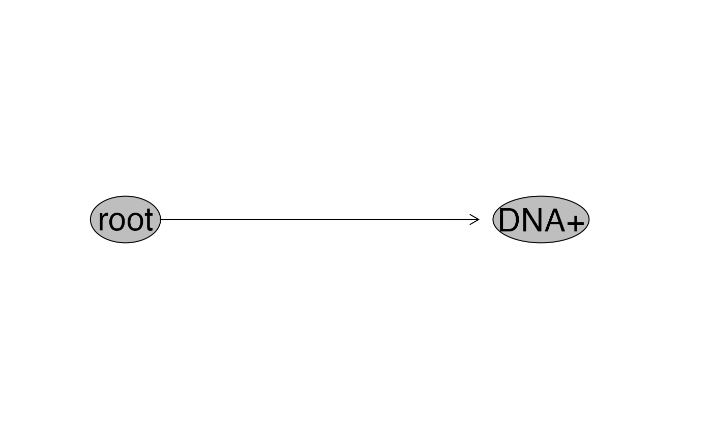
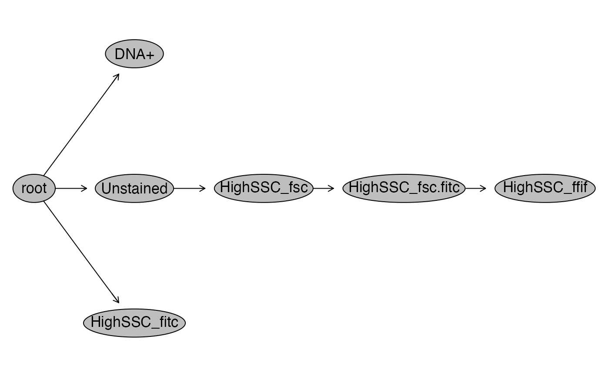
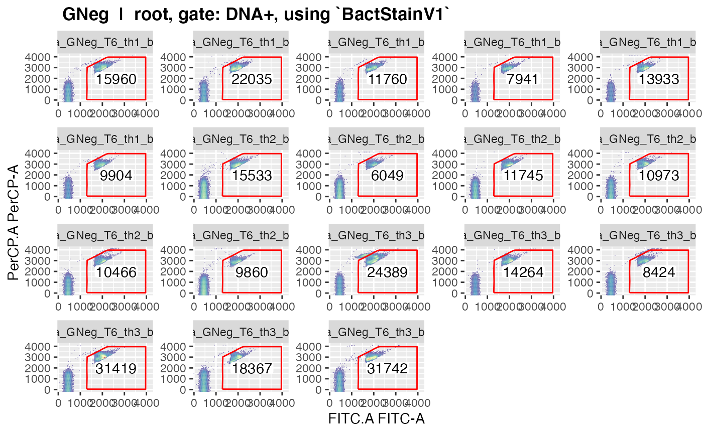
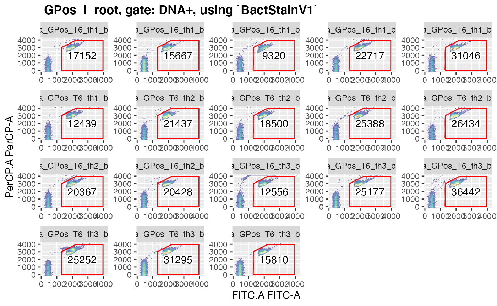
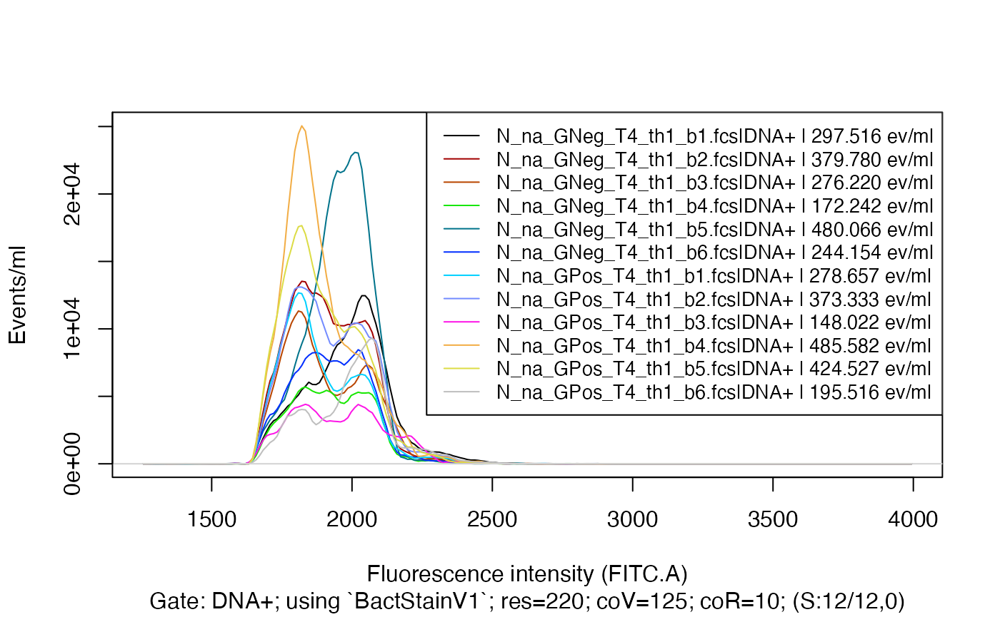
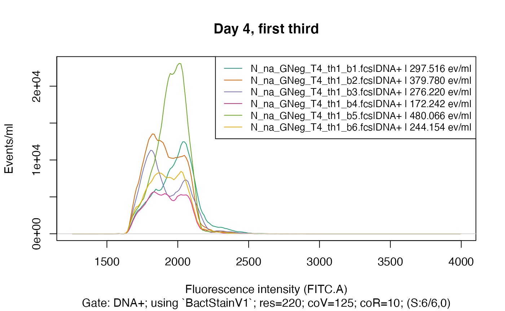
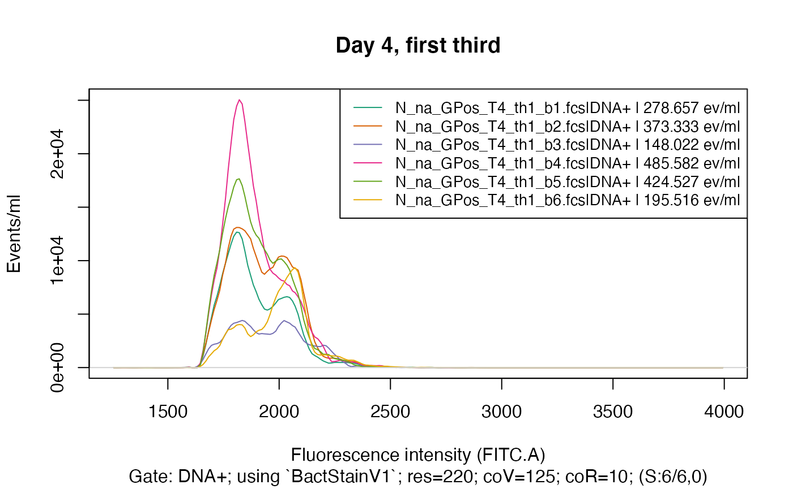

There are two basic scenarios when using flowdex that
further define the appropriate workflow:
Gating strategy and polygon gates are not yet defined.
Here, the focus is on establishing the gating strategy and manually drawing the polygon gates.Gating strategy and polygon gates are already defined.
Here, the focus is on using the previously established gating strategy to extract fluorescence distributions, visualise them and export them to file. All this (except visualisation) is conveniently done viaflowdexit(). Look at Quickstart for an immediate example.
Workflow 2
If not already done, set up the tutorial data as described in Get
Started.
And, if not already done either, copy these files from the tutorial
folder in the experiment-home folder:
td <- tempdir()
fromFcs <- list.files(paste0(td, "/flowdex_tutorial/fcsFiles"), full.names=TRUE)
fromDict <- list.files(paste0(td, "/flowdex_tutorial/dictionary"), full.names=TRUE)
fromGating <- list.files(paste0(td, "/flowdex_tutorial/gating"), full.names=TRUE)
toFcs <- paste0(td, "/tap_water_home/fcsFiles")
toDict <- paste0(td, "/tap_water_home/dictionary")
toGating <- paste0(td, "/tap_water_home/gating")
#
all(file.copy(fromFcs, toFcs, overwrite=TRUE))
#> [1] TRUE
file.copy(fromDict, toDict, overwrite=TRUE)
#> [1] TRUE
file.copy(fromGating, toGating, overwrite=TRUE)
#> [1] TRUE TRUE TRUE TRUE TRUE TRUESet the working directory to ‘tap_water_home’:
Flowdexit
Using flowdexit() is the most straight-forward way to
extract fluorescence distributions when the gating strategy and all the
gate definitions are checked and in place. (Read Workflow
1 for learning how to write a gating strategy and how to define
polygon gates.)
At this point we assume that we
Provided a structured ID character in the sample ID field of each sample in the GUI of our FCM-machine,
completed our data acquisition and have all our fcs files in the folder called ‘fcsFiles’,
have a dictionary file where all the abbreviations in the structured ID character are listed in the folder called ‘dictionary’,
have a gating strategy file along with its gate definitions in the folder called ‘gating’.
If all that requirements are met, we can call:
fdmat1 <- flowdexit() # this might take a few seconds
#> Reading in fcs files... ok.
#> Producing gating set... Applying fjbiexp transformation... ok.
#> Gating: (1 gate)
#> done!
#> DNA+: Extracting binned data on FITC.A (res=220) and recalc. to volume... ok.
#> Exporting data (1 gate) to xlsx...ok.
#> fdmat-object saved.
fdmat1@pData[1:5,] # to inspect volume and sample ID data
#> sampleId
#> N_na_GNeg_T4_th1_b1.fcs tr: GNeg; Td: 4; wt: nativ; ap: no; th: th1; ha: ha1; bk: b1
#> N_na_GNeg_T4_th1_b2.fcs tr: GNeg; Td: 4; wt: nativ; ap: no; th: th1; ha: ha1; bk: b2
#> N_na_GNeg_T4_th1_b3.fcs tr: GNeg; Td: 4; wt: nativ; ap: no; th: th1; ha: ha1; bk: b3
#> N_na_GNeg_T4_th1_b4.fcs tr: GNeg; Td: 4; wt: nativ; ap: no; th: th1; ha: ha1; bk: b4
#> N_na_GNeg_T4_th1_b5.fcs tr: GNeg; Td: 4; wt: nativ; ap: no; th: th1; ha: ha1; bk: b5
#> name btim volume
#> N_na_GNeg_T4_th1_b1.fcs N_na_GNeg_T4_th1_b1.fcs 14:14:27 45500
#> N_na_GNeg_T4_th1_b2.fcs N_na_GNeg_T4_th1_b2.fcs 14:16:12 45500
#> N_na_GNeg_T4_th1_b3.fcs N_na_GNeg_T4_th1_b3.fcs 14:17:52 45500
#> N_na_GNeg_T4_th1_b4.fcs N_na_GNeg_T4_th1_b4.fcs 14:19:30 45500
#> N_na_GNeg_T4_th1_b5.fcs N_na_GNeg_T4_th1_b5.fcs 14:22:30 45500
fdmat1@cyTags[1:5,] # to inspect class- and numerical variables assigned to each sample
#> C_treatment Y_Time.d C_waterType C_addedPA C_third
#> N_na_GNeg_T4_th1_b1.fcs GNeg 4 nativ no th1
#> N_na_GNeg_T4_th1_b2.fcs GNeg 4 nativ no th1
#> N_na_GNeg_T4_th1_b3.fcs GNeg 4 nativ no th1
#> N_na_GNeg_T4_th1_b4.fcs GNeg 4 nativ no th1
#> N_na_GNeg_T4_th1_b5.fcs GNeg 4 nativ no th1
#> C_half C_beaker
#> N_na_GNeg_T4_th1_b1.fcs ha1 b1
#> N_na_GNeg_T4_th1_b2.fcs ha1 b2
#> N_na_GNeg_T4_th1_b3.fcs ha1 b3
#> N_na_GNeg_T4_th1_b4.fcs ha1 b4
#> N_na_GNeg_T4_th1_b5.fcs ha1 b5
fdist <- fdmat1[[1]] # to inspect fluorescence distribution
fdist[1:5, 130:134] # pick some random fluorescence intensities
#> flsc2876 flsc2889 flsc2901 flsc2914 flsc2926
#> N_na_GNeg_T4_th1_b1.fcs|DNA+ 14.1397064 6.147698 0.000000 0.000000 1.8443095
#> N_na_GNeg_T4_th1_b2.fcs|DNA+ 0.0000000 0.000000 0.000000 0.000000 0.0000000
#> N_na_GNeg_T4_th1_b3.fcs|DNA+ 0.9221548 0.000000 0.000000 3.073849 6.1476985
#> N_na_GNeg_T4_th1_b4.fcs|DNA+ 6.1476985 3.073849 0.000000 0.000000 0.9221548
#> N_na_GNeg_T4_th1_b5.fcs|DNA+ 6.1476985 7.326007 6.147698 3.073849 0.0000000This will use the default gating strategy called ‘gateStrat’ (where
one (1) gate is defined), extract the fluorescence distributions along
the ‘FITC.A’ channel (in that example), re-calculate
them to events per ml and save the resulting data in an
xlsx file (along with some metadata etc. in additional sheets).
The resulting R-object is saved to disc as well. (See also
fd_save() and fd_load() for how to manually
save and load the resulting ‘fdmat’ object.)
When calling flowdexit(), the gating set built on the
way to extract the fluorescence distributions gets assigned to an extra
environment. It can be accessed via:
gs1 <- gsenv$gatingSet
length(flowWorkspace::sampleNames(gs1))
#> [1] 108
flowWorkspace::plot(gs1) # inspect the gating hierarchy
Lets be a bit more ambitious and try the (slightly non-sensical) gating strategy where multiple nested gates are defined, called ‘gateStrat_2’:
fdmat2 <- flowdexit(gateStrat = "gateStrat_2")
#> Reading in fcs files... ok.
#> Producing gating set... Applying fjbiexp transformation... ok.
#> Gating: (6 gates)
#> done!
#> DNA+: Extracting binned data on FITC.A (res=220) and recalc. to volume... ok.
#> HighSSC_ffif: Extracting binned data on FSC.A (res=220) and recalc. to volume... ok.
#> Exporting data (2 gates) to xlsx...ok.
#> fdmat-object saved.
#
str(fdmat2, max.level = 2)
#> Formal class 'fdmat' [package "flowdex"] with 6 slots
#> ..@ .Data :List of 2
#> ..@ metadata :'data.frame': 2 obs. of 14 variables:
#> ..@ cyTags :'data.frame': 108 obs. of 7 variables:
#> Formal class 'cyTags' [package "flowdex"] with 4 slots
#> ..@ gateStrat:'data.frame': 6 obs. of 9 variables:
#> Formal class 'gatingStrategy_fd' [package "flowdex"] with 5 slots
#> ..@ pData :'data.frame': 108 obs. of 4 variables:
#> ..@ note : chr "original"
fdmat2@metadata
#> gateName gateDef extractOn res flRange apc coR coV rcv igp
#> 1 DNA+ BactStainV1 FITC.A 220 1250,4000 TRUE 10 125 TRUE FALSE
#> 2 HighSSC_ffif HighSSC_FSC_V1 FSC.A 220 0,4000 TRUE 10 125 TRUE FALSE
#> smo smN smP ncpwl
#> 1 TRUE 11 5 4
#> 2 TRUE 11 5 4
fdmat2@gateStrat
#> GateName Parent GateOnX GateOnY GateDefinition extractOn
#> 1 DNA+ root FITC.A PerCP.A BactStainV1 FITC.A
#> 2 Unstained root FITC.A PerCP.A UnstainedV1 FITC.A
#> 3 HighSSC_fsc Unstained FSC.A SSC.A HighSSC_FSC_V1 FSC.A
#> 4 HighSSC_fitc root FITC.A PerCP.A HighSSC_FITC_V1 FITC.A
#> 5 HighSSC_fsc.fitc HighSSC_fsc FITC.A PerCP.A HighSSC_FITC_V1 FITC.A
#> 6 HighSSC_ffif HighSSC_fsc.fitc FSC.A SSC.A HighSSC_FSC_V1 FSC.A
#> minRange maxRange keepData
#> 1 1250 4000 TRUE
#> 2 0 1000 FALSE
#> 3 0 4000 FALSE
#> 4 0 1000 FALSE
#> 5 0 1000 FALSE
#> 6 0 4000 TRUE
#
str(fdmat2[[1]], max.level = 2)
#> Formal class 'fdmat_single' [package "flowdex"] with 6 slots
#> ..@ .Data : num [1:108, 1:219] 0 0 0 0 0 0 0 0 0 0 ...
#> .. ..- attr(*, "dimnames")=List of 2
#> ..@ eventsPerVol:'data.frame': 108 obs. of 4 variables:
#> Formal class 'eventsPV' [package "flowdex"] with 6 slots
#> ..@ gateName : chr "DNA+"
#> ..@ metadata :'data.frame': 1 obs. of 14 variables:
#> ..@ ncpwl : int 4
#> ..@ note : chr "original"
#> ..$ dim : int [1:2] 108 219
#> ..$ dimnames:List of 2
str(fdmat2[[2]], max.level = 2)
#> Formal class 'fdmat_single' [package "flowdex"] with 6 slots
#> ..@ .Data : num [1:108, 1:219] 0 0 0 0 0 0 0 0 0 0 ...
#> .. ..- attr(*, "dimnames")=List of 2
#> ..@ eventsPerVol:'data.frame': 108 obs. of 4 variables:
#> Formal class 'eventsPV' [package "flowdex"] with 6 slots
#> ..@ gateName : chr "HighSSC_ffif"
#> ..@ metadata :'data.frame': 1 obs. of 14 variables:
#> ..@ ncpwl : int 4
#> ..@ note : chr "original"
#> ..$ dim : int [1:2] 108 219
#> ..$ dimnames:List of 2
#Again, the gating set that was produced on the way can be accessed via:
gs2 <- gsenv$gatingSet
flowWorkspace::plot(gs2) # inspect the gating hierarchy
Please observe that every call to flowdexit() will
assign the object gatingSetto the environment
gsenv. So, only one gating set, the last
one produced when calling flowdexit(), can be
accessed in that environment.
Visualize Gates
To visualize the gated data call
plotgates(gs1, toPdf = FALSE) # too much on one graphicThis would plot all gated data from all samples in
one page, what is a bit much – making the single plot too small.
To improve this, it is possible to define a column name from the cyTags
(as can be found in the ‘fdmat’ object) that then will be used to split
the data, resulting in only those samples being plotted in the same
graphic that share the same value in the specified cyTags-column:
colnames(fdmat1@cyTags)
#> [1] "C_treatment" "Y_Time.d" "C_waterType" "C_addedPA" "C_third"
#> [6] "C_half" "C_beaker"
plotgates(gs1, spl = "Y_Time.d", toPdf = TRUE)
#> Plotting gates split by Y_Time.d...
#> Coordinate system already present. Adding new coordinate system, which will replace the existing one.
#> .
#> Coordinate system already present. Adding new coordinate system, which will replace the existing one.
#> .
#> Coordinate system already present. Adding new coordinate system, which will replace the existing one.
#> ..ok.(The resulting pdf can be found in the folder ‘tap_water_home/plots’;
(‘toPdf’ defaults to TRUE)).
This way we have only samples from the same day on one graphic - a more
useful output, but still rather small individual plots.
A solution could be to read in only fcs files from the same day, then
use plotgates() split by ‘C_treatment’. Lets try this using
the function makeAddGatingSet():
(The resulting PDFs can again be found in ‘tap_water_home/plots’.)
# with only one gate (use default gating strategy) again, just to show it here in the vignette
plotgates(makeAddGatingSet(patt = "T6"), spl = "C_treatment", toPdf = FALSE)
#> Reading in fcs files... ok.
#> Producing gating set... Applying fjbiexp transformation... ok.
#> Gating: (1 gate)
#> done!
#> Coordinate system already present. Adding new coordinate system, which will replace the existing one.
#> .
#> Coordinate system already present. Adding new coordinate system, which will replace the existing one.
#> ..This should give nice graphics of the gated data in each sample.
Please observe that gated data get plotted for every gate in the gating
strategy where ‘keepData’ is set to TRUE.
Set the argument ‘plotAll’ in the function plotgates() to
TRUE to override this and to plot gated data from all
gates defined in the gating strategy, what can be very helpful in the
process of checking / verifying the gating strategy:
Visualize Fluorescence Distribution
As the purpose of flowdex is to extract fluorescence
distributions, it would be borderline obscene not to have at least a
basic way to visually inspect the result. (Note: The functionality to
visualize the fluorescence distribution is merely intended to give a
first view of the data. It is not intended for data analysis or
presentation.)
plotFlscDist(fdmat1)
#> Plotting fluorescence distributions ...
#> ok(Again, the default behavior is to export the plot to a pdf located
in the folder ‘plots’.)
Fluorescence intensities of all samples along the FITC channel (in this
example) are displayed re-calculated to events per volume on the
y-axis .
Again, too much information.
So, for the purpose of this demonstration, we will look at a subset of the data - only samples from day 4 and the first third of beakers. We do this by providing a pattern to read in only those filenames that match this pattern:
fdmat_s <- flowdexit(patt = "T4_th1")
#> Reading in fcs files... ok.
#> Producing gating set... Applying fjbiexp transformation... ok.
#> Gating: (1 gate)
#> done!
#> DNA+: Extracting binned data on FITC.A (res=220) and recalc. to volume... ok.
#> Exporting data (1 gate) to xlsx...ok.
#> fdmat-object saved.
fdmat_s # has now only 12 samples
#> An object of class 'fdmat' [package 'flowdex'] with 6 slots
#> containing data from 12 samples in 1 gate.
#> Fluorescence distribution has been re-calculated to events per ml.
#> (use 'object[[1]]' to inspect the first list element containing the first fluorescence distribution)
#>
#>
#> Slot 'metadata':
#> gateName gateDef extractOn res flRange apc coR coV rcv igp smo smN
#> 1 DNA+ BactStainV1 FITC.A 220 1250,4000 TRUE 10 125 TRUE FALSE TRUE 11
#> smP ncpwl
#> 1 5 4
#>
#>
#> Slot 'cyTags':
#> C_treatment Y_Time.d C_waterType C_addedPA C_third
#> N_na_GNeg_T4_th1_b1.fcs GNeg 4 nativ no th1
#> N_na_GNeg_T4_th1_b2.fcs GNeg 4 nativ no th1
#> N_na_GNeg_T4_th1_b3.fcs GNeg 4 nativ no th1
#> N_na_GNeg_T4_th1_b4.fcs GNeg 4 nativ no th1
#> N_na_GNeg_T4_th1_b5.fcs GNeg 4 nativ no th1
#> N_na_GNeg_T4_th1_b6.fcs GNeg 4 nativ no th1
#> N_na_GPos_T4_th1_b1.fcs GPos 4 nativ no th1
#> N_na_GPos_T4_th1_b2.fcs GPos 4 nativ no th1
#> N_na_GPos_T4_th1_b3.fcs GPos 4 nativ no th1
#> N_na_GPos_T4_th1_b4.fcs GPos 4 nativ no th1
#> N_na_GPos_T4_th1_b5.fcs GPos 4 nativ no th1
#> N_na_GPos_T4_th1_b6.fcs GPos 4 nativ no th1
#> C_half C_beaker
#> N_na_GNeg_T4_th1_b1.fcs ha1 b1
#> N_na_GNeg_T4_th1_b2.fcs ha1 b2
#> N_na_GNeg_T4_th1_b3.fcs ha1 b3
#> N_na_GNeg_T4_th1_b4.fcs ha1 b4
#> N_na_GNeg_T4_th1_b5.fcs ha1 b5
#> N_na_GNeg_T4_th1_b6.fcs ha1 b6
#> N_na_GPos_T4_th1_b1.fcs ha1 b1
#> N_na_GPos_T4_th1_b2.fcs ha1 b2
#> N_na_GPos_T4_th1_b3.fcs ha1 b3
#> N_na_GPos_T4_th1_b4.fcs ha1 b4
#> N_na_GPos_T4_th1_b5.fcs ha1 b5
#> N_na_GPos_T4_th1_b6.fcs ha1 b6
#>
#>
#> Slot 'gateStrat':
#> GateName Parent GateOnX GateOnY GateDefinition extractOn minRange maxRange
#> 1 DNA+ root FITC.A PerCP.A BactStainV1 FITC.A 1250 4000
#> keepData
#> 1 TRUE
#>
#>
#> Slot 'pData':
#> sampleId
#> N_na_GNeg_T4_th1_b1.fcs tr: GNeg; Td: 4; wt: nativ; ap: no; th: th1; ha: ha1; bk: b1
#> N_na_GNeg_T4_th1_b2.fcs tr: GNeg; Td: 4; wt: nativ; ap: no; th: th1; ha: ha1; bk: b2
#> N_na_GNeg_T4_th1_b3.fcs tr: GNeg; Td: 4; wt: nativ; ap: no; th: th1; ha: ha1; bk: b3
#> N_na_GNeg_T4_th1_b4.fcs tr: GNeg; Td: 4; wt: nativ; ap: no; th: th1; ha: ha1; bk: b4
#> N_na_GNeg_T4_th1_b5.fcs tr: GNeg; Td: 4; wt: nativ; ap: no; th: th1; ha: ha1; bk: b5
#> N_na_GNeg_T4_th1_b6.fcs tr: GNeg; Td: 4; wt: nativ; ap: no; th: th1; ha: ha1; bk: b6
#> N_na_GPos_T4_th1_b1.fcs tr: GPos; Td: 4; wt: nativ; ap: no; th: th1; ha: ha1; bk: b1
#> N_na_GPos_T4_th1_b2.fcs tr: GPos; Td: 4; wt: nativ; ap: no; th: th1; ha: ha1; bk: b2
#> N_na_GPos_T4_th1_b3.fcs tr: GPos; Td: 4; wt: nativ; ap: no; th: th1; ha: ha1; bk: b3
#> N_na_GPos_T4_th1_b4.fcs tr: GPos; Td: 4; wt: nativ; ap: no; th: th1; ha: ha1; bk: b4
#> N_na_GPos_T4_th1_b5.fcs tr: GPos; Td: 4; wt: nativ; ap: no; th: th1; ha: ha1; bk: b5
#> N_na_GPos_T4_th1_b6.fcs tr: GPos; Td: 4; wt: nativ; ap: no; th: th1; ha: ha1; bk: b6
#> name btim volume
#> N_na_GNeg_T4_th1_b1.fcs N_na_GNeg_T4_th1_b1.fcs 14:14:27 45500
#> N_na_GNeg_T4_th1_b2.fcs N_na_GNeg_T4_th1_b2.fcs 14:16:12 45500
#> N_na_GNeg_T4_th1_b3.fcs N_na_GNeg_T4_th1_b3.fcs 14:17:52 45500
#> N_na_GNeg_T4_th1_b4.fcs N_na_GNeg_T4_th1_b4.fcs 14:19:30 45500
#> N_na_GNeg_T4_th1_b5.fcs N_na_GNeg_T4_th1_b5.fcs 14:22:30 45500
#> N_na_GNeg_T4_th1_b6.fcs N_na_GNeg_T4_th1_b6.fcs 14:24:12 45500
#> N_na_GPos_T4_th1_b1.fcs N_na_GPos_T4_th1_b1.fcs 15:01:20 70000
#> N_na_GPos_T4_th1_b2.fcs N_na_GPos_T4_th1_b2.fcs 15:03:47 45000
#> N_na_GPos_T4_th1_b3.fcs N_na_GPos_T4_th1_b3.fcs 15:05:36 45000
#> N_na_GPos_T4_th1_b4.fcs N_na_GPos_T4_th1_b4.fcs 15:07:24 45500
#> N_na_GPos_T4_th1_b5.fcs N_na_GPos_T4_th1_b5.fcs 15:09:08 45500
#> N_na_GPos_T4_th1_b6.fcs N_na_GPos_T4_th1_b6.fcs 15:10:45 45500
#>
#>
#> Slot 'note':
#> [1] "original"
gs_s <- gsenv$gatingSet # not required, just to keep it
#
plotFlscDist(fdmat_s, toPdf = FALSE) # much nicer
Again, as in plotgates(), it is possible to split the
data by providing a column name of the cyTags to have only these samples
in the graphic that have the same value in this cyTag:
colnames(fdmat_s@cyTags) # we choose "C_treatment"
#> [1] "C_treatment" "Y_Time.d" "C_waterType" "C_addedPA" "C_third"
#> [6] "C_half" "C_beaker"
plotFlscDist(fdmat_s, spl = "C_treatment", ti="Day 4, first third", toPdf = FALSE)
plotFlscDist(fdmat_s, spl = "C_treatment", fns="_d4_th1", ti="Day 4, first third") # export also to pdf
#> Plotting fluorescence distributions split by C_treatment ...
#> okPlease refer to the manual at plotFlscDist() to see the
arguments for custom colors and custom linetypes.
Go on to learn about the Accessory
Functions, e.g. about using the function
applyBandpass() to apply a bandpass-like filter to the
fluorescence intensities.